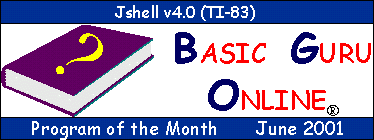

| HOME >> Program Archives |
Submit Your Programs
Programs Under Development (PUDs)
Latest Program Additions
Programs Sorted by Downloads
Program Archives
Quick Navigator
Program of the Month
Program Idea Message Board
| Submit Your Programs |
Do you want to submit your calculator programs to the growing number of programs in the BASIC Guru Online Archive? You have to be a member in order to submit them. Becoming a member is really easy. all you have to do is fill out the Membership Sign-Up form and then wait to receive notice that you are officially a BASIC Guru Online member. Once you are a member, then you can submit your programs. It's just that simple. Special thanks to Lucas Johnson for this great idea.
| Programs Under Development (PUDs) |
The PUDs Page contains programs that the members of BASIC Guru Online are currently creating. Each PUD will include a short description, the type of program it is, the precentage completed, and maybe even a screenshot. Some PUDs my be up for beta testing, so you could test out the actual program and report any bugs you find or comments/suggestions you have about to program to the author. You should check the PUDs out to see what's to come in the BASIC Guru Online Program Archives.
| Latest Program Additions |
Been away from the BASIC Guru Online Program Archives and wondering which programs recently have been posted on the site? You don't have to look through all the categories. Just look below to see which programs were posted on the site. The last five days when programs were posted are listed.
| Thursday, July 19, 2001 | ||
| Title | Category | Type |
|---|---|---|
| Mini Ticalc.org Website v1.0 | TI-83 BASIC Miscellaneous | New |
| Wednesday, July 18, 2001 | ||
| Title | Category | Type |
| Fake Break Message | TI-83 Assembly Miscellaneous | New |
| Waving American Flag | TI-83 Assembly Miscellaneous | New |
| Dancing Hobbes | TI-83 Assembly Miscellaneous | New |
| Dancing Calvin | TI-83 Assembly Miscellaneous | New |
| Monday, July 16, 2001 | ||
| Title | Category | Type |
| 3D Rotating Alien Face | TI-83 Assembly Miscellaneous | New |
| Flapping Butterfly | TI-83 Assembly Miscellaneous | New |
| Animated Musical Note | TI-83 Assembly Miscellaneous | New |
| Spinning Penny | TI-83 Assembly Miscellaneous | New |
| Sunday, July 15, 2001 | ||
| Title | Category | Type |
| Animated Frog | TI-83 Assembly Miscellaneous | New |
| Friday, July 13, 2001 | ||
| Title | Category | Type |
| BangBang 4 | TI-83 BASIC Games | New |
| Tuesday, July 10, 2001 | ||
| Title | Category | Type |
| Tempconv | TI-83 Plus BASIC Science | New |
| Programs Sorted by Downloads |
Tired of having to search through the entire Program Archives to find a good program? Well, your search is over. In the List of Programs Sorted by Downloads, you'll find a list of all the programs in the BASIC Guru Online Program Archives ordered by the number of times they have been downloaded. This way you can see which are the most popular downloads, and not waste your time with the mediocre programs. It's highly likely that those programs near the top of the list are good programs and worth the download.
| Program Archives |
Note: All of the TI-83 BASIC programs in this archive will work on the TI-83 Plus also. So, if you have a TI-83 Plus, not only should you check out the programs in the TI-83 Plus archive, but you should also check out the ones in the TI-83 BASIC archive.
| Quick Navigator |
If you know exactly what section you want to go to, such as TI-83 Plus BASIC Game, use the Quick Navigator below to quickly jump to that category. This will save you the trouble of having to click a whole lot of links. Note: The Quick Navigator will not work if you do not have JavaScripting (or have it enabled) in your browser.

Click on the picture to go to the program's profile page.